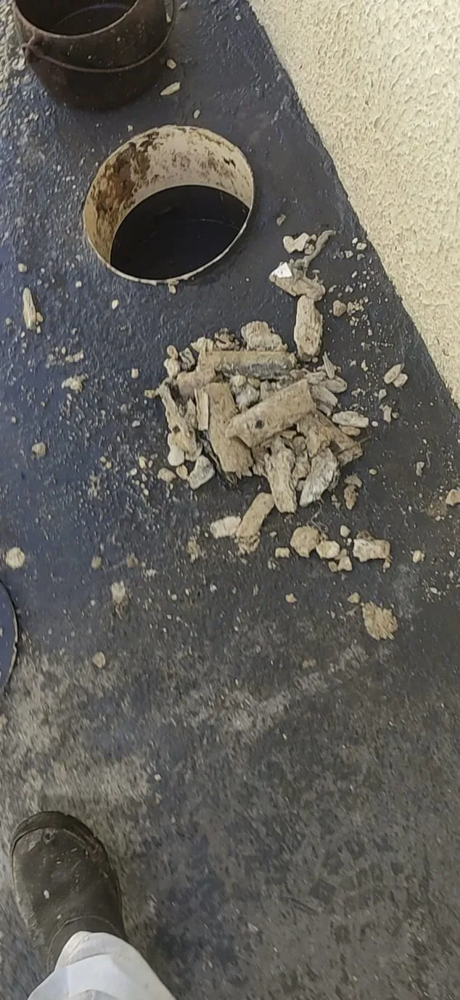

Gordura endurecida no cano em Goiânia: por que vira pedra e como remover sem danificar o encanamento
Publicado em · Atualizado em · 10 min de leitura
A gordura vira pedra no cano por uma reação química chamada saponificação: com o tempo, a gordura se quebra em ácidos graxos, que se juntam ao cálcio da água e do esgoto e formam um tipo de sabão duro, insolúvel e grudado na parede do tubo. A soda cáustica acelera essa quebra e pode deixar a massa ainda mais dura. Desentupidores de mercado só ajudam em casos leves; com o cano estreitado (níveis 2 e 3) a sonda rotativa costuma resolver, e com a rede comprometida (nível 4) o caminho mais seguro é o hidrojateamento feito por técnico experiente. Curvas, diâmetro e estado do cano decidem o método, e isso só se confirma no local.
Quem já abriu um cano de cozinha antigo conhece a cena: em vez de uma gordura mole, sai uma crosta dura, cinza ou amarelada, que parece pedra e às vezes tem o formato do próprio cano. Em 10 anos de serviço, retirei muito disso de pias, caixas de gordura e redes de esgoto. Neste artigo explico, em palavras simples, por que a gordura endurece, qual é o papel da soda cáustica e como escolher o método de remoção sem estragar o encanamento.
Resumo: qual método para cada nível de entupimento
| Nível | Como está o cano | O que costuma resolver |
|---|---|---|
| Nível 1 | Água descendo devagar, camada fina de gordura | Desengordurante aplicado com alta pressão; limpeza do sifão |
| Nível 2 | Um ponto parou, gordura já endurecendo no ramal | Sonda rotativa |
| Nível 3 | Vários pontos ruins, placas de gordura no caminho | Sonda rotativa (às vezes com hidrojato para acabamento) |
| Nível 4 | Rede comprometida, crosta de gordura saponificada | Hidrojateamento com técnico experiente |
A tabela é um ponto de partida. Comprimento do trecho, quantidade de curvas, diâmetro e material do cano mudam a escolha. Se você ainda não sabe em que nível está o seu caso, veja como identificar os 4 níveis de entupimento.
Por que a gordura vira pedra dentro do cano?
Durante muito tempo se achou que a gordura só esfriava e grudava. Ela esfria, sim, mas isso explica apenas a gordura mole, aquela que derrete com água quente. A "pedra" é outra coisa. Pesquisadores da Universidade Estadual da Carolina do Norte, com apoio da agência ambiental dos EUA (EPA), analisaram depósitos tirados de redes de esgoto e concluíram que eles são, basicamente, sabão de cálcio. Um estudo com depósitos de redes do Reino Unido chegou à mesma conclusão.
Em palavras simples, o processo acontece em três etapas:
- A gordura se quebra. Óleo e gordura são formados por ácidos graxos presos a uma molécula de glicerina. Com o tempo, a água, o calor e as bactérias do esgoto soltam esses ácidos graxos.
- Os ácidos graxos encontram o cálcio. O cálcio vem da própria água, de restos de alimentos e até do concreto das caixas e da rede.
- Forma-se um sabão duro. Ácido graxo + cálcio vira um sal que não se dissolve em água. É a saponificação, a mesma reação do sabão caseiro, só que com cálcio no lugar do sódio. O resultado é uma crosta granulada, parecida com arenito, que gruda na parede do cano e vai crescendo em camadas.
Esse sabão de cálcio não derrete com água quente e não sai com detergente. Os próprios pesquisadores apontam que ele exige limpeza mecânica pesada, como o hidrojateamento.

Qual a diferença entre gordura comum e gordura saponificada?
| Gordura comum | Gordura saponificada | |
|---|---|---|
| Textura | Pastosa, pegajosa, parece manteiga | Dura, granulada, parece pedra ou arenito |
| Com água quente | Amolece e avança no cano | Não muda |
| Onde aparece | Sifão, começo do ramal, caixa de gordura | Parede do cano, curvas, trechos com pouca queda, rede depois da caixa |
| Como sai | Limpeza do sifão, ventosa, desengordurante | Sonda rotativa ou hidrojateamento |
| Sinal típico | Pia lenta que melhora depois de limpar | Entupimento que volta pouco tempo depois de desentupido |
A soda cáustica ajuda ou piora a gordura endurecida?
Na maioria dos casos, piora. A soda cáustica é hidróxido de sódio, um produto muito alcalino. Ela quebra a gordura muito rápido: é a mesma reação usada para fazer sabão em casa. Perto do ralo, isso pode até abrir uma passagem por algumas horas. O problema é o que acontece depois:
- Acelera a quebra da gordura. Em laboratório, a quebra da gordura em meio alcalino também gerou os sais de cálcio que formam os depósitos. A soda entrega ao cano exatamente esse ambiente.
- Esquenta e empurra o problema. A reação da soda com a água libera calor. A gordura amolece, anda alguns metros, esfria num trecho mais difícil e endurece de novo lá.
- Vira uma massa empedrada. Um trabalho de conclusão de curso de Engenharia Civil do UniCEUB, sobre a rede de esgoto do Distrito Federal, descreve justamente isso: a soda usada para desentupir pia transforma a gordura em uma composição empedrada que adere às paredes da tubulação. O mesmo trabalho liga o problema à falta de caixa de gordura ou à falta de limpeza dela.
- Fica parada no cano. Com o cano totalmente fechado, o produto fica ali, corrosivo, esperando quem for abrir o sifão ou usar a ventosa.
Na prática de campo, quando a pessoa conta que já jogou soda várias vezes, quase sempre encontramos a gordura mais dura e mais espalhada pela rede do que nos casos em que nada foi usado.
Diabo Verde e outros desentupidores de mercado funcionam?
Existem vários desentupidores e desengordurantes vendidos em mercado, como o Diabo Verde e outras marcas. Boa parte deles tem hidróxido de sódio na fórmula, a própria embalagem avisa que causam queimaduras graves e que servem para material orgânico, como gordura, cabelo e papel.
- Onde podem ajudar: gordura recente, mole, perto do ralo, com a água ainda descendo (nível 1).
- Onde não resolvem: no nível 4, com a rede comprometida por crosta de gordura saponificada, dificilmente um produto de mercado resolve. Ele não alcança metros de cano e não dissolve sabão de cálcio. O risco é ficar parado no trecho entupido e piorar o endurecimento.
Se for usar, siga a embalagem, use luva e óculos, nunca misture com outro produto e não use ventosa logo depois. Mais detalhes em o que não usar para desentupir.
Como remover a incrustação sem danificar o encanamento?
A regra é tirar a gordura da parede do cano inteira, não só abrir um furo no meio dela, e escolher a ferramenta pelo nível e pelo tipo de tubulação.
Nível 1: desengordurante com alta pressão
Com a água ainda descendo e a camada de gordura fina, o desengordurante de alta pressão que usamos na BV Desentupidora já resolve: ele solta a gordura da parede enquanto a pressão leva o resíduo embora. Junto, vale limpar o sifão e a caixa de gordura.
Níveis 2 e 3: sonda rotativa
A sonda rotativa é um cabo de aço com uma ponteira que gira dentro do cano e raspa a parede. Ela resolve bem quando a gordura já endureceu em placas no ramal ou em alguns pontos da rede. Funciona bem em trechos com várias curvas, onde o cabo consegue acompanhar o caminho, e também em cano amassado ou com terra, onde o jato não passa. A ponteira e a velocidade precisam combinar com o diâmetro: ponteira grande demais num cano fino de PVC pode arranhar ou forçar as conexões.
Nível 4: hidrojateamento
Quando a gordura saponificada tomou a rede, o hidrojateamento é a opção mais segura. O jato de água em alta pressão sai por um bico com furos para trás e para os lados, quebra a crosta e lava a parede do cano em toda a volta, sem raspar com metal. Veja como funciona o hidrojateamento.
Aqui a experiência do técnico conta muito. A pressão, o bico e a velocidade de avanço precisam ser escolhidos para cada cano: pressão alta demais num PVC antigo ou numa emenda mal feita pode causar estrago, e pressão baixa demais só faz um furo na crosta. Também é o técnico que percebe, pelo retorno da água e pelo que sai do cano, se a gordura acabou ou se ainda há trecho sujo.
O que conta além do nível
- Curvas: cada joelho é um ponto onde a gordura acumula e onde a ferramenta precisa passar.
- Diâmetro: ramal de pia de 40 ou 50 mm pede ferramenta diferente de uma rede de 100 mm.
- Material e idade: PVC novo, PVC antigo, ferro fundido e manilha de barro aguentam esforços diferentes.
- Acesso: sifão, caixa de gordura e caixas de inspeção definem por onde entrar sem quebrar.
Por isso essa escolha é feita no local, depois de olhar a tubulação, e não por telefone.
Caso real: como a gordura para no encanamento
No vídeo abaixo eu mostro, na prática, como a gordura vai grudando nas paredes do cano e estreitando a passagem da água até o entupimento voltar mesmo depois de desobstruído. É o mesmo processo que encontramos em um atendimento em Inhumas (GO), contado em detalhes no artigo Como a gordura entope tubulações: caso real em Inhumas-GO: a pia estava parada e, ao abrir a tubulação, o que travava a água eram pedras de gordura grudadas na parede do cano.
Nesses casos, abrir só um furo no meio da crosta resolve por poucos dias. O que impede a volta é remover a gordura da parede inteira.
A classificação dos níveis usada neste artigo é a mesma que expliquei no LinkedIn em Os 4 níveis de entupimento: como identificar e o que fazer e no guia completo aqui do blog.
Como saber se a tubulação pode ser recuperada ou precisa ser trocada?
Na maioria dos casos de gordura, o cano é recuperado: a gordura sai e o tubo continua bom. A troca entra em cena quando o problema não é mais só a gordura.
Sinais de que dá para recuperar:
- Depois da limpeza, a água volta a correr com vazão normal.
- O cano não tem vazamento, trinca nem infiltração em volta.
- O entupimento não volta em poucas semanas com o uso normal.
Sinais de que o trecho pode precisar ser trocado:
- Cano de PVC amolecido, deformado ou achatado, comum depois de muita soda ou água fervendo.
- Ferro fundido muito corroído por dentro, que solta lascas e volta a segurar gordura logo.
- Trinca, emenda solta ou infiltração de esgoto no piso ou na parede.
- "Barriga" no cano (trecho afundado sem queda), onde a água para e a gordura volta a acumular mesmo depois de limpo.
- Crosta tão aderida que só sairia forçando o tubo, num trecho curto e fácil de trocar.
Quando há dúvida, a inspeção com câmera depois da limpeza mostra o estado real da parede. Trocar o cano sem antes limpar e olhar por dentro costuma ser gasto desnecessário. Veja também se é preciso quebrar o piso para desentupir.
Dicas caseiras: o que funciona e o que não fazer
Algumas dicas que encanadores e moradores trocam em fóruns como o Reddit, e que fazem sentido para prevenção:
- Passe papel-toalha em panelas e pratos antes de lavar e jogue no lixo.
- Guarde o óleo usado em garrafa PET e entregue num ponto de coleta.
- Use peneira no ralo da pia e esvazie todo dia.
- Uma vez por semana, deixe correr água quente da torneira com detergente por alguns minutos. É prevenção para gordura recente, não remove pedra de gordura.
- Produtos com enzimas ou bactérias para manutenção de ralo são citados por muitos profissionais como uso preventivo, não para desentupir.
- Limpe a caixa de gordura com frequência: veja de quanto em quanto tempo limpar.
- Jogar soda cáustica repetidas vezes para "derreter" a pedra.
- Jogar água fervendo em cano de PVC.
- Misturar produtos de limpeza: pode liberar gás tóxico.
- Empurrar arame, cabide ou vergalhão: fura o cano ou fica preso.
- Usar ventosa logo depois de colocar produto químico.
Quando chamar um profissional?
- O entupimento volta pouco tempo depois de desentupido.
- Sifão limpo e ventosa não resolveram.
- Já foi usada soda ou desentupidor químico e a água continua parada.
- Mais de um ponto da casa está ruim, ou a caixa de gordura transborda.
- Há mau cheiro, barulho de bolhas ou retorno de água.
Se já colocou produto químico no cano, avise o técnico antes de ele abrir o sifão: isso muda a forma de trabalhar com segurança.
Perguntas frequentes
O que é gordura saponificada?
É a gordura que reagiu com o cálcio da água e do esgoto e virou um tipo de sabão duro, que não se dissolve em água. É ela que forma as pedras grudadas na parede do cano.
Soda cáustica dissolve pedra de gordura?
Não. A soda pode abrir uma passagem em gordura recente perto do ralo, mas acelera a quebra da gordura e pode deixar a massa ainda mais dura e espalhada pela rede.
Diabo Verde resolve entupimento de gordura?
Pode ajudar em gordura recente e leve, com a água ainda descendo. Quando a rede já está comprometida por crosta de gordura (nível 4), dificilmente um produto de mercado resolve.
Sonda rotativa ou hidrojateamento: qual é melhor para gordura?
Depende do nível e do cano. A sonda rotativa resolve bem nos níveis 2 e 3 e em trechos com curvas ou cano amassado; no nível 4, com a rede tomada pela gordura, o hidrojateamento é o mais indicado.
Hidrojateamento estraga o cano?
Feito com pressão e bico adequados ao tipo de cano, não. O risco aparece com pressão errada em tubo antigo ou emenda frágil, por isso a experiência do técnico importa.

Sobre o autor
Lucas Nonato é fundador da BV Desentupidora em Goiânia e trabalha há 10 anos com desentupimento, hidrojateamento, limpeza de caixa de gordura e redes de esgoto e pluviais em Goiânia, Aparecida de Goiânia, Anápolis, Itaberaí, Inhumas e região. Os casos citados neste artigo são de atendimentos reais da equipe. Perfil no LinkedIn.
Fontes
- Melo, J. V. S. (2018). Os impactos causados por aportes indevidos de rejeitos na rede coletora de esgoto do Distrito Federal. Trabalho de Curso em Engenharia Civil, UniCEUB (orientador: Rogério Pinheiro Magalhães Carvalho). A seção sobre incrustações descreve a gordura que solidifica e adere à tubulação e o uso de soda cáustica, que a transforma em uma composição empedrada presa às paredes do cano.
- NC State University (2011). Fat in sewers turns into soap. Resume o estudo de He, X. et al., Evidence for fat, oil, and grease (FOG) deposit formation mechanisms in sewer lines (Environmental Science & Technology): os depósitos endurecidos são sais de cálcio de ácidos graxos, ou seja, sabão.
- Williams, J. B. et al. (2012). Fat, oil and grease deposits in sewers: characterisation of deposits and formation mechanisms. Water Research. Depósitos de redes do Reino Unido: o processo vai além do simples esfriamento da gordura e envolve saponificação com cálcio.
- EPA (Agência de Proteção Ambiental dos EUA), projeto de pesquisa R834264 (Ducoste, J. et al.). Relatório final. Os depósitos de gordura são sais de cálcio de ácidos graxos formados por saponificação; em laboratório, esses sais também se formaram com a quebra da gordura em meio alcalino.
- Drogaria Araujo. Desentupidor de Pias e Ralos Diabo Verde 300g (informações da embalagem): contém hidróxido de sódio, causa queimaduras graves e é indicado só para material orgânico.
- ABNT. NBR 8160:1999 — Sistemas prediais de esgoto sanitário: projeto e execução. Define caixa de gordura, caixa de inspeção e caixa sifonada.
- Lucas Nonato (LinkedIn). Os 4 níveis de entupimento: como identificar e o que fazer.
- Experiência de campo da equipe BV Desentupidora (atendimentos em Goiânia, Itaberaí, Inhumas, Heitoraí e região).
- Lucas Nonato. Relato original deste atendimento no LinkedIn.